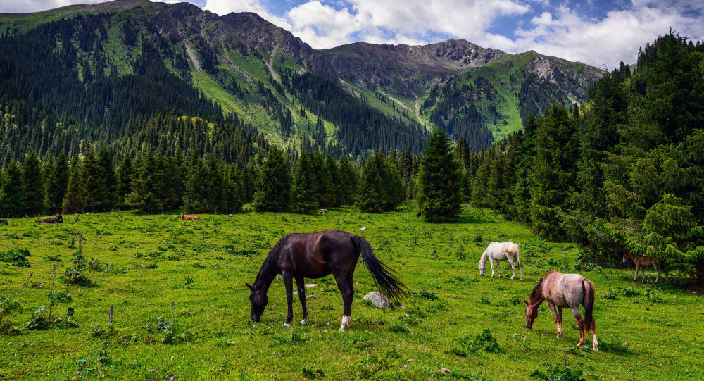

Природа Кыргызстана
Потрясающе красивая и чистая природа Кыргызстана – одна из главных причин, по которой вам обязательно стоит посетить эту страну. Горы, составляющие 94% площади Киргизии, открывают множество возможностей для походов, пешего туризма и отдыха на природе. От просторных долин до высокогорных ледников, путешественнику, оказавшемуся в этой по своему уникальной части Центральной Азии, откроется необычайное разнообразие ландшафтов и природных достопримечательностей.
На территории Кыргызстана доминирует Тянь-Шань, большой горный хребет, который делит страну на северную и южную части. Наиболее густонаселенными частями страны являются широкие долины вокруг гор, такие как Чуйская долина на севере и Ферганская долина на юге. В этих районах находятся крупнейшие города Кыргызстана Бишкек и Ош, а также большинство сельскохозяйственных ферм. От городов рукой подать до множества прекрасных природных мест: гор, природных заповедников, озер или просто очаровательных пейзажей вдоль дороги.
Кыргызские жайлоо
- Суусамыр
- Каракол
- Чыйырчык
- Бешконущ
- Ала-Арча

Кыргызстан знаменит ещё и тем, что здесь находится озеро Иссык-Куль – второе по величине высокогорное озеро в мире, которое часто называют жемчужиной Центральной Азии. На северном берегу Иссык-Куля расположено самое большое количество курортов и общественных пляжей, а южный берег славится своей природой и ущельями. Каракол, крупнейший город Иссык-Кульской области, является отправной точкой для многих походов на некоторые из самых известных ледников и гор, например, отсюда можно посетить знаменитое ущелье Джети-Огуз.
- Сам Тянь-Шань - это целая экосистема: глубокие ущелья с стремительными реками, скалистыми вершинами, небольшими лесами и широкими высотными пастбищами. Летом эти пастбища усеяны юртами полукочевых скотоводов, которые приводят сюда своих животных, чтобы они питались сочными горными травами. Меж горных вершин притаились озера, некоторые из них, в зависимости от схода ледников, бывают сезонными. Одно из самых известных горных озер Сон-Куль находится на высоте около 3000 метров (10 000 футов) над уровнем моря и доступно только летом. Пик Победы, расположенный на границе с Китаем – самая высокая вершина Тянь-Шаня, достигающая 7 439 метров (24 406 футов) над уровнем моря. Рядом находится Хан Тенгри высотой около 7000 метров (23 000 футов).
- Высоко в горах водится множество животных. Распространены виды хищных птиц, включая орлов, ястребов и соколов. Реже можно встретить барана Марко Поло с большими загнутыми рогами и снежных барсов, которые скрываются в горах и не любят показываться кому-то на глаза. Недавно Кыргызстан начал предпринимать более масштабные усилия по сохранению уникальных экосистем и животных, в том числе проводятся природоохранные мероприятия, такие как Глобальный форум по снежному барсу, изображения которого можно найти по всей Средней Азии (в том числе он является символом Бишкека).
- В южной части страны большинство людей живут в равнинных районах Ферганской долины. Равнины славятся своей плодовитостью, поддерживая большие группы населения и фермеров. В Ферганской долине находится Ош - второй по величине город Кыргызстана. Летом поля заполняются подсолнухами, что делает деревни еще красивее. В Арсланбобе, в провинции Джалал-Абад, расположен самый большой в мире естественный ореховый лес.
- На юге Кыргызстана преобладает Памир, горный хребет, который простирается по Таджикистану и Китаю. Прямо на границе с Таджикистаном, на высоте 7134 метра (23 406 футов) над уровнем моря, находится пик Ленина. Пик Ленина - один из самых простых для покорения семиметровых пиков в мире, поэтому он пользуется большой популярностью среди альпинистов.